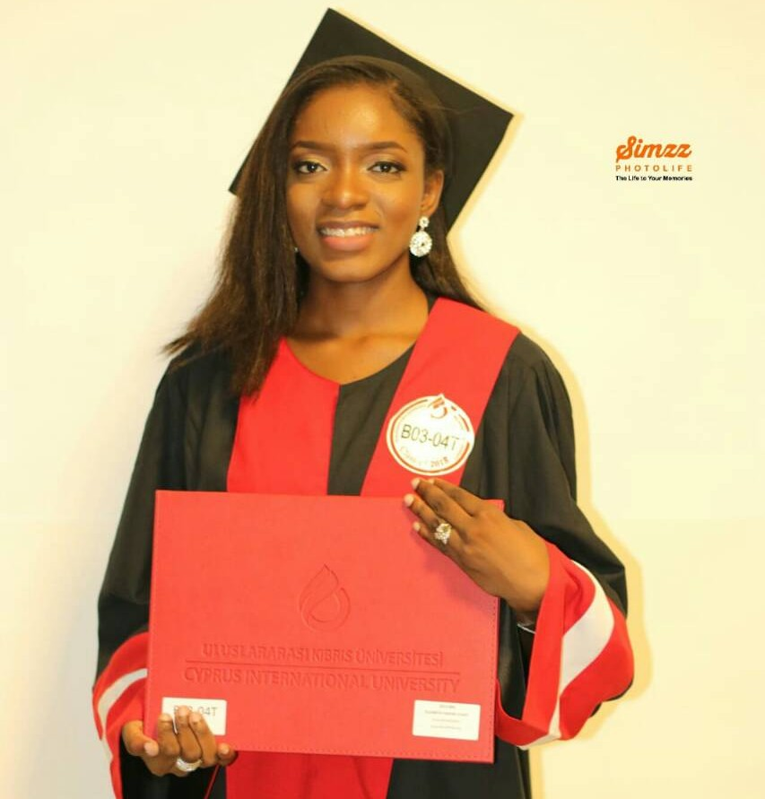
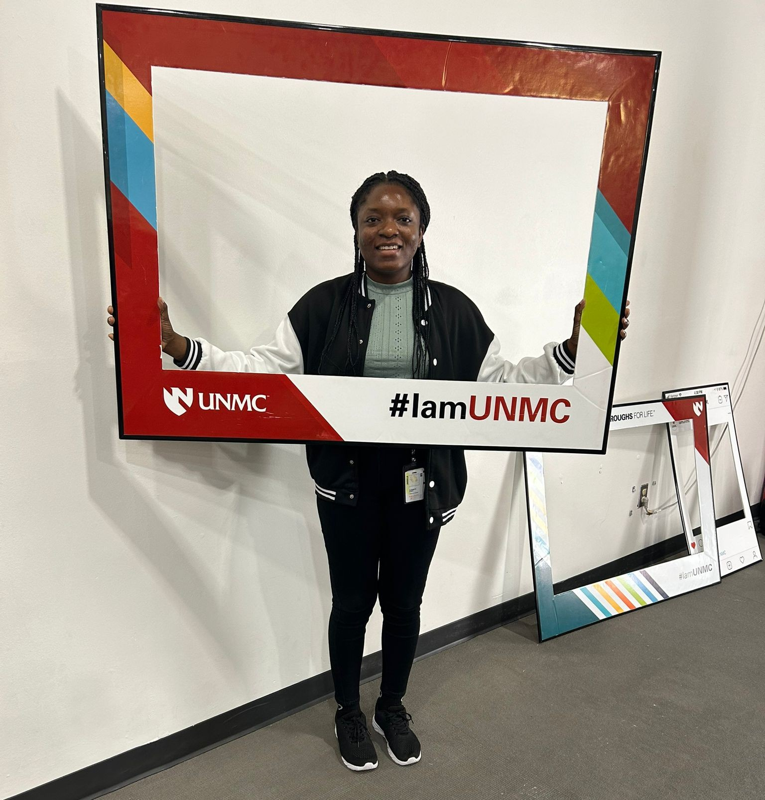
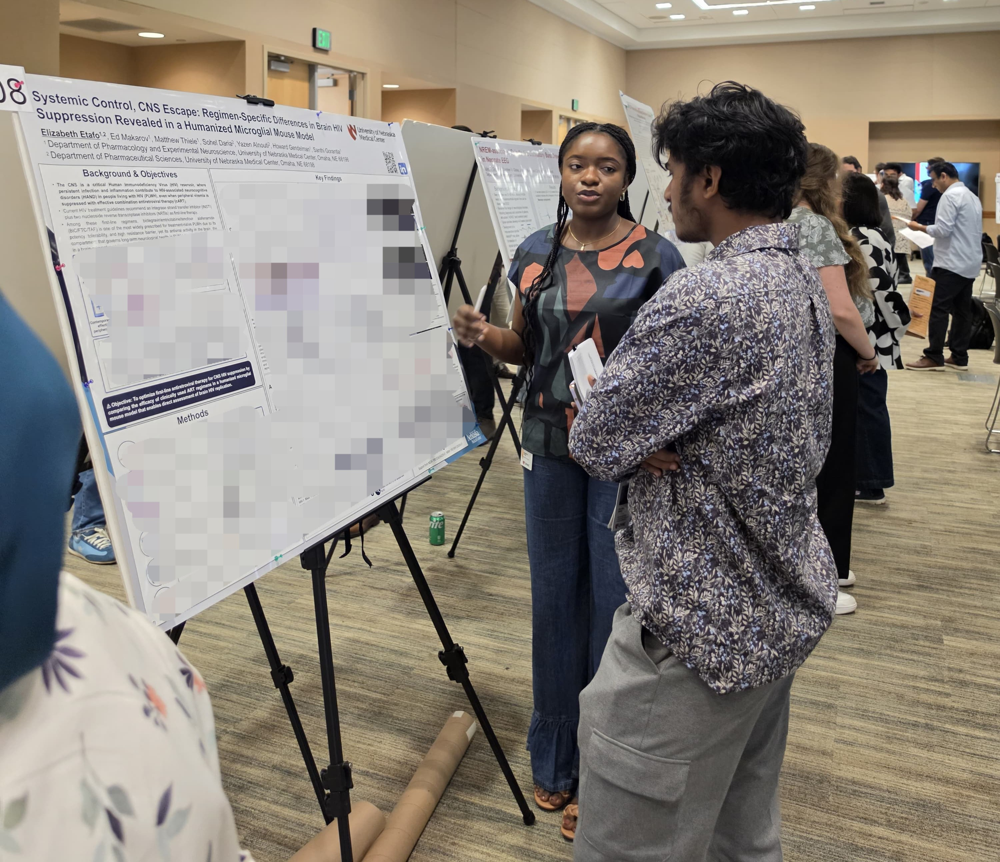

Patents and intellectual property (WIPO Academy)
- DL-320 Basics of Patent Drafting (self-study), 2026
- DL-177 e-Tutorial on Using Patent Information, 2026
- DL-170 Specialized Course on the Essentials of Patents, 2026
About
My path began in pharmacy and expanded into doctoral research that combines biological experiments, pharmacology, formulation science, and analysis. That breadth shapes how I approach unfamiliar problems: frame the question, choose the right methods, test carefully, and communicate what the evidence supports.



2023 – May 2027 (expected)
University of Nebraska Medical Center (UNMC), Omaha, NE
2013 – 2018
Cyprus International University, North Cyprus
Dean’s Award, High Honor Certificate (2015–2018) and Honor Certificate (2013–2015)